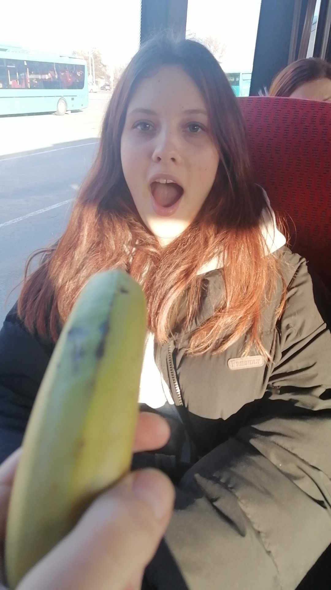

Milá naša Ťimee
Scrolluj dole ty korbač
Chcel som byť originálny
Takže som ti spravil stránku, ako bolo požiadané
A ževraj tu má niekto narodeniny
A ževraj mám o tebe niečo napísať
a popritom si spríjemniť čas fotkami z galérie :D

Mohol by som to zahrať na Joža že "mám
ťa rád lebo si moja sesternica" ale to by bolo oničom.
Si strašne super človek, aj ako sesternica.
Už od škôlky som si ťa obľúbil (vtedy som
ešte nevedel že bratranci nemôžu spolu chodiť
pls don't judge).
Nejak sa ti podarilo vyrásť z tohoto malého
dingača na veľkého dingáča. Však to bolo nedávno
a boača my už sme dospelí.
Pamätám si na časy keď sme sa ešte hrali
na Super Mária a princeznú ktorú som musel
oslobodiť. Wish we could return to the good
old times.
Ja som si myslel že som ťa poznal dostatočne,
keďže yk bratranci. No zistil som že som sa mýlil
keď som sa zapojil do vašej skupinky a keď som si
uvedomil že sme sa videli dokopy každy tretí uhorský
rok u babky.
Napríklad to že si taký kresťan ma riadne prekvapilo.
A už vôbec som nečakal že sa mi zveríš o svojich osobných
problémoch s frajerom. To bolo akože celkom boom, že mi až
na toľko veríš. A popravde to trošku zahrialo pri srdiečku.
(Veľa šťastia s Matúšom btw)
Osobne mám rád keď máme občas taký ten spoločný
vibe keď sa hráme na postihnutých. Nehovorím to nahlas
ale som Bohu vďačný že mám sesternicu ako si ty,
a že žiadna iná sesternica by ťa nedokázala nahradiť.
No a nakoniec, všetko najlepšie k tým 18. narodeninám.
Poriadne ich osláv.
Veľa šťastia, zdravia, lásky, no veď také to typické
klasické, veľa kamarátov, úspechov v živote, retardovanej postihnutosti
a tak ďalej. Nemeň sa nám.
-Samo